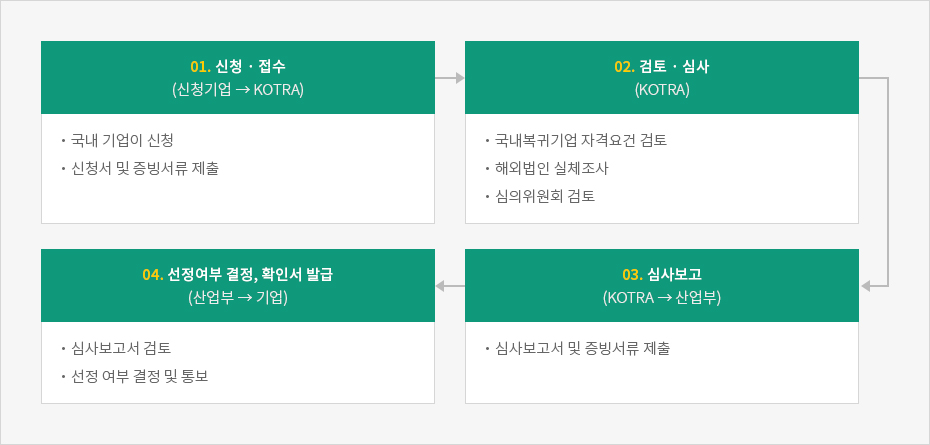

국내복귀기업 지원신청
- Home
- 국내복귀기업지원
- 사업신청
- 국내복귀기업 지원신청
선정요건
- 해외사업장 2년 이상 운영 제조업, 정보통신업(한국표준산업분류상), 지식서비스산업(산업발전법상) 업종으로, 정상 영업 활동을 하였을 것
- 해외사업장 구조조정 해외사업장 청산·양도·생산량 축소(25% 이상) 중 한 가지에 해당할 것 단, 기존 국내사업장이 없는 경우 해외사업장 구조조정 요건 면제 * 연구개발업의 생산량 축소는 기준경상연구개발비의 10%~25% 이상 축소
- 해외사업장 국내사업장 지배주주 동일 국내모기업(국내모기업이 없는 경우, 국내 신청기업의 소유주)의 실질적 지배자가 해외사업장을 실질적 지배(지분 30% 이상 보유 등)하고 있을 것
- 국내사업장 투자 해외사업장의 업종과 동일한 업종(한국표준산업분류 소분류 기준)으로 국내사업장의 신설·증설 투자를 이행할 것 * 단, 소분류상 일치하지 않더라도 소재·부품이 동일하거나 생산공정 등이 유사한 경우, 국내복귀기업지원위원회 평가를 통해 인정 가능

※ 단, 외국인투자 촉진법에 따른 외국인투자에 대한 지원 혜택(조세 · 임대료 감면 등)을 받은 기업이 아닐 것
선정절차


-
01. 신청 · 접수 (신청기업 ▶ KOTRA)
- 국내 기업이 신청
- 신청서 및 증빙서류 제출
-
02. 검토 · 심사 (KOTRA)
- 국내복귀기업 자격요건 검토
- 해외법인 실체조사
- 심의위원회 검토
-
03. 심사보고 (KOTRA ▶ 산업부)
- 심사보고서 및 증빙서류 제출
-
04. 선정여부 결정, 확인서 발급 (산업부 ▶ 기업)
- 심사보고서 검토
- 선정 여부 결정 및 통보

신청기한
국내 사업장 신 · 증설 완료, 해외사업장 철수(청산 · 양도) 미완료의 경우

국내 사업장 신 · 증설 미완료, 해외사업장 철수(청산 · 양도 · 축소) 완료의 경우

사후관리
국내복귀진행기업의 이행완료 기한
신청 시 해외사업장 구조조정 및 국내사업장 투자 “계획” 제출 기업
국내복귀기업 신청 시, 해외사업장 구조조정(신청서5호) 및 국내사업장 투자(신청서 6호)를 계획으로 제출하신 기업은 선정일 기준으로 해외사업장은 4년 이내, 국내사업장 신·증설 완료는 5년 이내 완료하여야 합니다.
※ 다만 선정일 이전부터 생산량을 축소해온 기업은 축소 개시일부터 4년 이내 완료
국내복귀기업 신청 시, 해외사업장 구조조정(신청서5호) 및 국내사업장 투자(신청서 6호)를 계획으로 제출하신 기업은 선정일 기준으로 해외사업장은 4년 이내, 국내사업장 신·증설 완료는 5년 이내 완료하여야 합니다. 다만 선정일 이전부터 생산량을 축소해온 기업은 축소 개시일부터 4년 이내 완료. 유턴기업 선정은 신청 후 60일 이내 선정됩니다.

국내복귀진행기업의 사후관리 기간
‘해외 사업장 축소로 신청’한 기업과 국내사업장 기 보유한 기업은 각 사업장에 대한 사후관리기간이 있습니다. 또한, 투자 보조금을 지원받은 국내복귀기업은 신·증설 투자사업장에 대한 사후관리 기간이 있습니다.
- 해외사업장 축소 기업(축소한 해외사업장): 축소완료일의 차기연도 게시일로부터 3년동안 축소 유지 시 사후관리
- 국내사업장 기 보유 기업(기보유 국내사업장): 투자사업장 신·증설 완료일로부터 3년동안 매각, 축소 등 금지 시 사후관리
- 투자보조금 지원받은 국내복귀기업(신·증설 투자사업장): 보조금 정산 신청일로부터(신청한 달의 1일) 3년동안 매각, 축소 등 금지 시 사후관리

국내복귀 완료기한
국내 사업장 신 · 증설 기한
국내복귀기업 선정일로부터 5년 이내
※ 국내복귀기업 신청 시, 해외사업장 구조조정(신청서5호) 및 국내사업장 투자(신청서 6호)를 계획으로 제출하신 기업은 선정일 기준으로 해외사업장은 4년 이내, 국내사업장 신증설 완료는 5년 이내 완료하여야 합니다.
(다만 선정일 이전부터 생산량을 축소해 온 기업은 축소 개시일부터 4년 이내 완료)
(다만 선정일 이전부터 생산량을 축소해 온 기업은 축소 개시일부터 4년 이내 완료)
국내 사업장 신 · 증설 완료 기한

해외 사업장 청산 · 양도 · 축소 기한
| 해외 사업장 | 완료기한 |
|---|---|
| 청산 · 양도 |
|
| 축소 |
|
해외 사업장 철수 기한(청산 · 양도 또는 축소)

제출서류
지원대상 국내복귀기업으로 선정되기 위해, KOTRA로 작성 · 신청하는 서류는 아래와 같습니다.
공통신청 서식
[별지 제1호서식]지원대상 국내복귀기업 선정신청서 [다운로드]유형별 신청 서식
국내복귀기업은- 해외진출 사업장의 철수 (청산, 양도, 축소) 요건과
- 국내복귀 사업장의 투자(신설,증설) 요건을 만족해야 합니다.
KOTRA로 신청하는 시점에는 철수와 투자요건을 모두 이행 완료하여야 하는 것이 아니라, 각각의 계획을 제출하고 국내복귀기업으로 우선 선정 받을 수 있습니다.
따라서, 철수와 투자의 현재 상태에 따라 신청 서식이 상이하므로 아래 참고 바랍니다.
문의처 (KOTRA 유턴지원팀)
- 연락처 : 02-3460-7361~4
- 이메일 : reshoring@kotra.or.kr